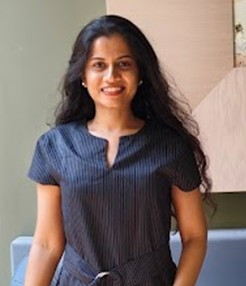

Assistant Professor of Biotechnology at M.G. Science Institute (Autonomous), Ahmedabad — affiliated with Gujarat University. Pioneering UVC LED–based disinfection technologies to ensure safe drinking water through laboratory science with real-world environmental impact.
Investigating contamination pathways and developing efficient treatment strategies to ensure safe drinking water, with emphasis on real-world deployment in resource-limited contexts.
Advanced oxidation processes using UVC LED technology for inactivation of bacterial indicators in actual water systems — moving beyond laboratory models to real drinking water.
Degradation of pharmaceuticals such as Ampicillin via photo oxidation based methods. Toxicity assessment using ECOSAR and bioluminescence of emerging contaminants and degrdaded products.
Studying microbial communities in environmental systems — biofilm formation, pathogen ecology, and microbiological indicators used to assess water safety standards.
Designing low-cost, accessible scientific solutions deployable in resource-constrained environments — making safe water technology available where it matters most.
All research streams converge on one mission — safe, accessible, and affordable drinking water for communities everywhere and especially where it is needed most.